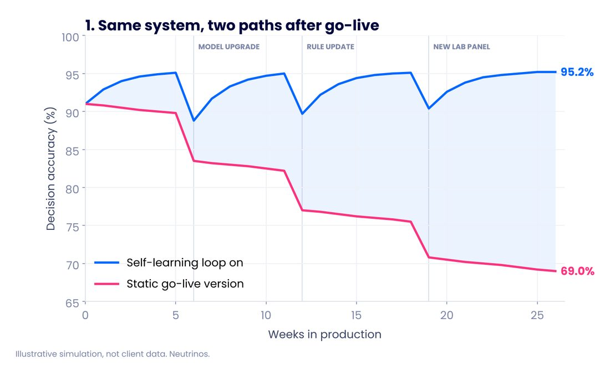
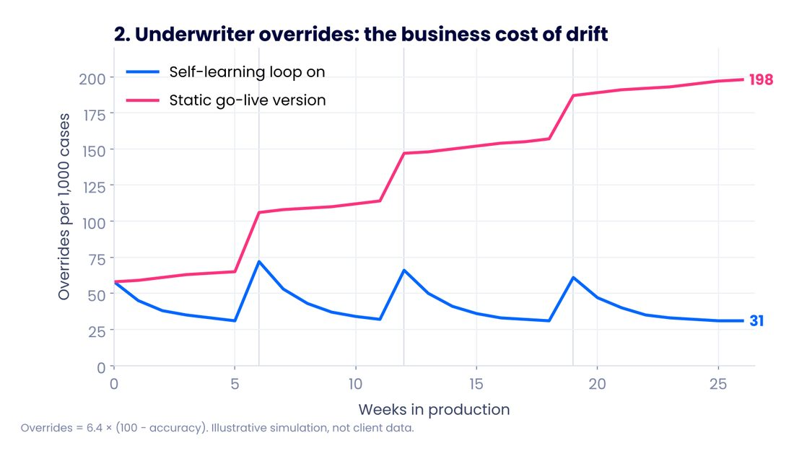
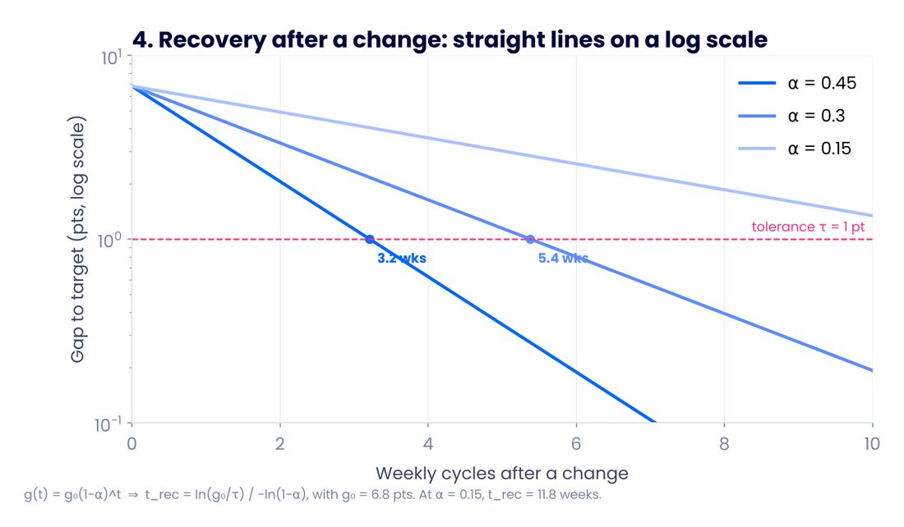
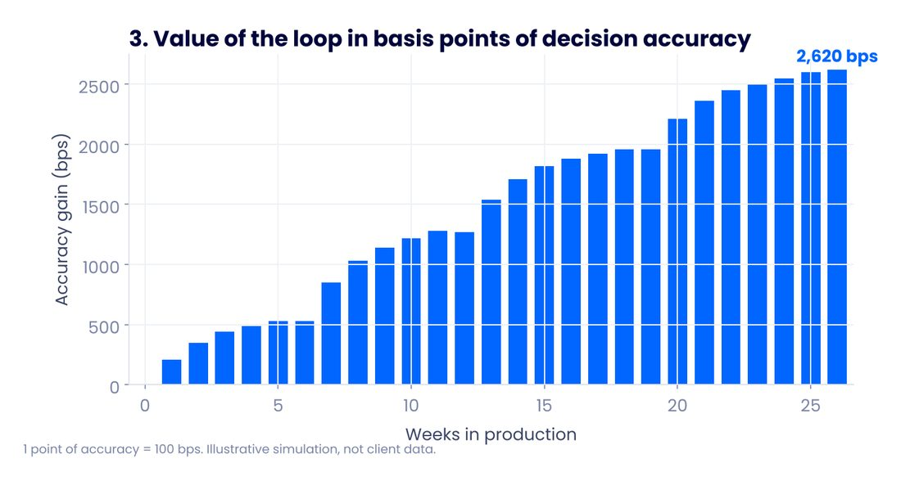
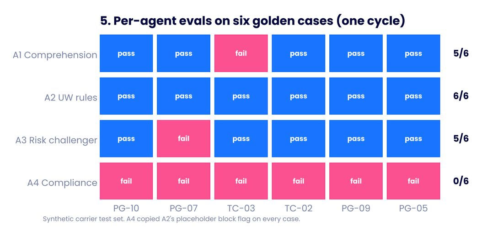
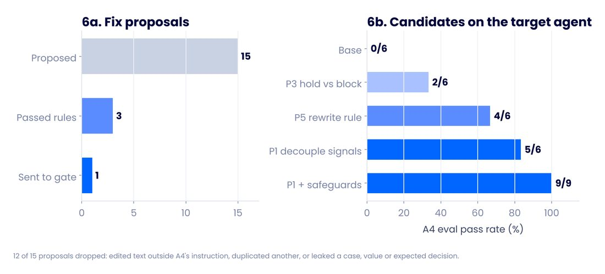
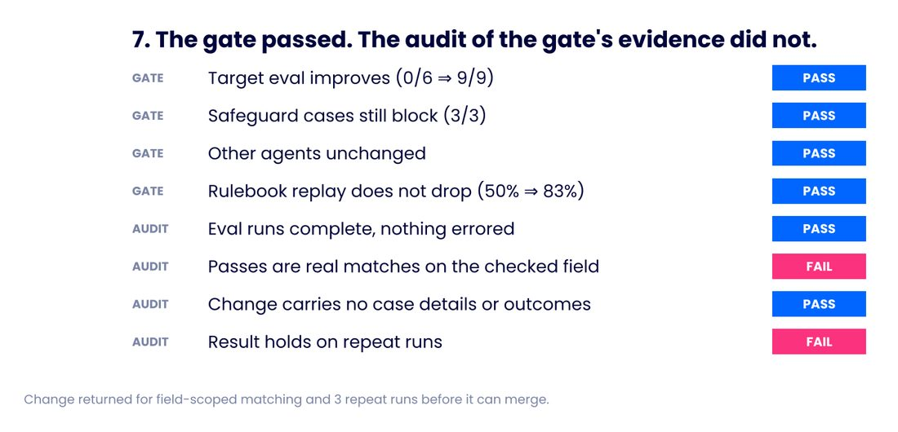

The harness has to learn
How we built a self-learning loop for insurance agents, with the formulas and the logs
At Neutrinos we quickly realised that a harness in production can't be a static line. It has to behave more like a living thing. That is what led us to build a learning loop around our agent systems, and this post is the long version of how it works: what it measures, the maths behind the decisions it makes, real log lines from one cycle, and where it still falls short.
A whitepaper with every formula, parameter and log line is here as a PDF.
Three degrees of freedom
An agent system in production has three things you can change.
Context is what the agents can see: the rule manual, product definitions, past cases, the documents attached to this case.
Model is the weights doing the reasoning.
Harness is everything wrapped around the model: the instructions each agent wakes up inside, the tools it can call, the checks on its output, how agents hand work to each other, and what happens when something fails.
Fine-tuning the model is the next version of our loop. Until then, the loop works on the other two, context and harness, and it does that without anyone having to retune them by hand.
The single agent vs multi-agent debate is mostly settled for us. What decides how good these systems are now is the harness, and the harness is turning into the bottleneck.
Enterprises already know this pattern from change management. Every change is slow, needs sign-offs and gets done by hand. Agentic systems are heading the same way. Something drifts, someone has to go in, work out what broke and retune it. With a few systems live, that stops working.
Why a static harness decays
Three things keep moving after go-live.
- The model underneath gets replaced. Providers ship new versions every few months, and each fails differently. The Self-Harness paper from Shanghai AI Lab ran the same self-repair loop on three models and found the fixes each one needed shared nothing.
- The work changes. A new product, a revised rule manual, a new lab panel, a state regulation.
- Failures are quiet. In a pipeline of several agents, end-to-end accuracy drops a few points and tells you nothing about which agent slipped.
To show the effect, we simulated one underwriting agent system over 26 weeks. Two identical copies start at 91% decision accuracy. Both lose about 0.25 points a week to slow drift, and both take the same three hits: a model upgrade in week 6, a rule manual update in week 12 and a new lab panel in week 19. One copy runs the learning loop weekly. The other stays on its go-live version.

By week 26 the loop copy is at 95.2%. The static copy is at 69.0%.
Decision accuracy is an abstract number for most business owners, so we track a second metric next to it: how many cases an underwriter has to correct.

The static copy ends at 198 overrides per 1,000 cases. The loop copy ends at 31. Over a book of business, that difference is underwriter time and decision quality you can price.
The simulation is illustrative. The drift rate, the size of each hit and the recovery speed are assumptions, chosen to match what we see in shape, and the formulas below show exactly how each number was produced.
The loop
Every cycle runs the same steps.
- Evaluate. Score each agent on its own against cases with known answers, plus the final decision.
- Diagnose. Link agent failures to the cases the final decision got wrong, to find which agent to fix.
- Propose. A separate Fix Proposer agent reads the failing evidence and writes candidate changes to that agent's harness.
- Filter. Rules drop any proposal that edits text outside the target instruction, repeats another proposal, or mentions a specific case, value or expected decision.
- Test. Each surviving candidate is applied alone and the same evals re-run, plus safeguard cases where the agent must still block.
- Gate. A candidate is promoted only if the target improves and nothing else regresses.
- Audit. A second set of rules checks the gate's own evidence before anything merges.
- Version. The merged change gets a version and a ledger entry, and the next cycle starts from whatever still fails.
The evals and the maths
Decision accuracy
The headline metric is the share of golden cases where the final decision matches the expected one.
A = (1/N) · Σᵢ 1[ŷᵢ = yᵢ]N is the number of golden cases, ŷᵢ the system's decision and yᵢ the expected decision. We report it in basis points as well, because that is the unit insurers use for everything else: a change of ΔA points is 100·ΔA bps.
Per-agent evals
Each agent is replayed on the inputs it actually received in the pipeline and checked against what it should have returned.
sₐ = (1/N) · Σᵢ match(oₐ,ᵢ , eₐ,ᵢ)oₐ,ᵢ is agent a's output on case i and eₐ,ᵢ the expected output. match() is an exact check on a named field where one exists. For free-text reasoning we use an LLM judge.
LLM-as-a-judge
The judge scores reasoning against a written rubric of k items, each 0 or 1, and we run it r times to check it agrees with itself.
J = (1/(k·r)) · Σⱼ Σₜ cⱼ,ₜ
agreement = share of rubric items where all r runs give the same scoreSet a floor for agreement (0.8 is a reasonable starting point). Below it, treat the judge score as no signal and send the case to a person.
Finding the agent to fix
Let W be the set of cases the final decision got wrong, and Fₐ the cases where agent a failed its eval. The blame score is the share of wrong outcomes where that agent also failed.
Bₐ = |Fₐ ∩ W| / |W|
target = argmaxₐ BₐIn the cycle logged below, A4 failed its eval on all three wrong outcomes (B = 1.0), well ahead of A1 and A3. This step is a script. It decides where to look. It never decides what to change.
The gate
A candidate c on target agent a is promoted only when every condition holds.
promote(c) ⇔ Δsₐ > 0
∧ ∀b ≠ a : Δs_b ≥ −ε
∧ safeguard pass rate = 100%
∧ ΔA_replay ≥ 0
∧ flip rate over r repeats ≤ φHere ε = 0, so no other agent may get worse. The audit in the cycle below asked for r = 3 repeat runs with φ = 0 flips.
Drift and recovery, in logs
The simulation is two lines of state per week. Both copies drift by δ and take the same shock sₜ. Only the loop copy recovers a fraction α of its gap to a target A* each cycle.
Aₜ = Aₜ₋₁ − δ − sₜ (static)
Aₜ = Aₜ₋₁ − δ − sₜ + α·(A* − Aₜ₋₁) (with loop, when no shock that week)With δ = 0.25, α = 0.45 and A* = 95.6, the gap after a shock decays geometrically.
g(t) = g₀ · (1 − α)ᵗ
t_rec = ln(g₀ / τ) / −ln(1 − α)τ is the tolerance, the gap you are willing to accept. After the week-6 model upgrade the gap is g₀ ≈ 6.8 points. With τ = 1 point, t_rec = ln(6.8) / −ln(0.55) ≈ 3.2 cycles, which is the three weeks the simulation shows. On a log scale these curves are straight lines, so you can read the recovery speed straight off the slope.

The same formula shows what a slower loop costs. At α = 0.15 recovery takes 11.8 weeks, and with a shock every six or seven weeks the system never fully catches up.
Overrides are modelled as proportional to error.
O = k · (100 − A), k = 6.4 overrides per 1,000 cases per point of error
By week 26 the loop is worth 2,620 bps of decision accuracy.
One real cycle, from the logs
The simulation shows the shape. This is one actual cycle, condensed from its ledger into one line per step, run on 1 November against a synthetic carrier (Northbeam Life, a term product called SecureTerm) with six golden cases. The pipeline has a conductor and four agents: A1 case comprehension, A2 underwriting rules, A3 risk challenger and A4 compliance. A rulebook makes the final decision.
1. Run and evaluate
{"cycle":2,"step":"run","cases":["PG-10","PG-07","TC-03","TC-02","PG-09","PG-05"],"pipeline":"C→A1→A2→A3→A4→rulebook","status":"ok","traces":6}
{"cycle":2,"step":"agent_eval","agent":"A1","pass":5,"total":6,"failed":["TC-03"]}
{"cycle":2,"step":"agent_eval","agent":"A2","pass":6,"total":6,"failed":[]}
{"cycle":2,"step":"agent_eval","agent":"A3","pass":5,"total":6,"failed":["PG-07"]}
{"cycle":2,"step":"agent_eval","agent":"A4","pass":0,"total":6,"failed":["PG-10","PG-07","TC-03","TC-02","PG-09","PG-05"],"note":"guardrailBlocked copied from A2 placeholder signal"}
{"cycle":2,"step":"rulebook_match","value":0.50}
The end-to-end match was 50%. Only the per-agent evals show that A4 had stopped doing its own check and was copying a placeholder flag from A2.
2. Diagnose
{"cycle":2,"step":"diagnose","wrong_outcomes":3,"blame":{"A4":1.0},"others":"A1, A3 lower","target":"A4","method":"script"}3. Propose and filter
{"cycle":2,"step":"propose","agent":"FixProposer","target":"A4","evidence":["A4 instruction","6 failing evals (input, output, expected)","passing cases","ledger"],"candidates":15,"diagnosis":"A4 copies A2's block flag instead of checking consent and prohibited factors itself"}
{"cycle":2,"step":"filter","kept":["P1","P5","P3"],"dropped":12,"drop_rules":["edits text outside A4 instruction","repeats another candidate","mentions a case, value or expected decision"]}The leak rule matters most. A model that can see the failing cases will happily write the answers into the prompt, and the eval score goes up for the wrong reason.
4. Test candidates
{"cycle":2,"step":"test","target":"A4","candidate":"P1","strategy":"decouple from upstream signals","pass":5,"total":6}
{"cycle":2,"step":"test","target":"A4","candidate":"P5","strategy":"rewrite the blocking rule","pass":4,"total":6}
{"cycle":2,"step":"test","target":"A4","candidate":"P3","strategy":"hold vs block principle","pass":2,"total":6}
{"cycle":2,"step":"test","target":"A4","candidate":"P1","set":"golden+safeguards","pass":9,"total":9,"safeguards":{"SG-01 genetic test, FL":"blocked","SG-02 expired HIPAA authorization":"blocked","SG-03 ZIP used to rate":"blocked"}}
5. Gate and audit
{"cycle":2,"step":"gate","candidate":"P1","target_eval":"0/6→9/9","safeguards":"3/3","other_agents":"unchanged","rulebook_replay":"0.50→0.83","result":"pass"}
{"cycle":2,"step":"gate_audit","checks":7,"passed":5,"failed":["pass_from_loose_text_match_outside_checked_field","PG-07_result_changed_between_runs"],"result":"returned","action":"field-scoped matching + 3 repeat runs"}
The gate passed, and the audit sent it back. One pass came from a loose text match outside the field being checked, and the prompt-injection case (PG-07) gave different answers on different runs. Without the audit, a change that looked like progress would have merged.
6. Smoke test and ledger
{"cycle":2,"step":"smoke_test","cases":["PG-10","SG-01"],"candidate":"P1","pipeline":"live","status":"completed","finding":"A4 output lost in pipeline: model returned ~570 tokens, stored payload {}","route":"platform team","fixable_by_loop":false}
{"cycle":2,"step":"ledger","target":"A4","candidate":"P1","scores":{"A4":"0/6→9/9","rulebook_replay":"50%→83%"},"gate":"pass","audit":"returned","next_cycle_target":["PG-07","A3"]}The smoke test found a fault no prompt edit can fix, so the loop routes it to the platform team. Knowing which problems are yours to fix is part of the loop's job.
What is still hard
Signals. The loop is only as good as its evals. Golden cases need defined outputs per agent, and building them takes underwriters' time. This is where RLVR (reinforcement learning from verifiable rewards) helps: the more outputs you can check mechanically, the less you depend on a judge.
Human verification. No person approves each change in the loop we describe here, but people still own the evals, the safeguard cases and the rubric the judge uses. That is where human judgement goes.
Repeat runs. Three repeats was a guess. For non-deterministic steps we still don't know how many runs make a result trustworthy.
Fine-tuning. Moving the model into the loop is the next step. It brings its own gate problem: a fine-tuned model can overfit the golden set in ways a prompt edit can't.
An invitation
Neutrinos would love to invite leaders from insurers to test the loop on their own data and measure the improvement in basis points on their own use cases. Message me directly or reply on Substack.
The simulation charts are illustrative and not client data. The cycle logs come from a synthetic carrier test set. The whitepaper has every formula, parameter and log line.